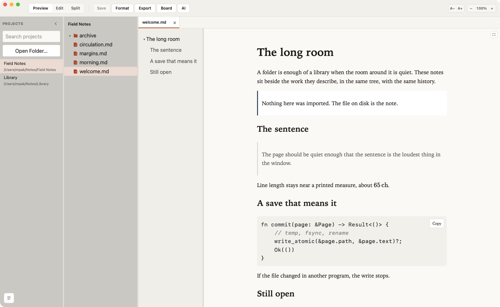
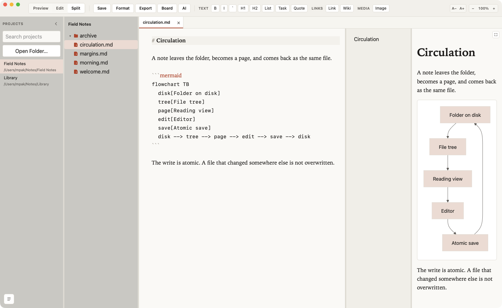
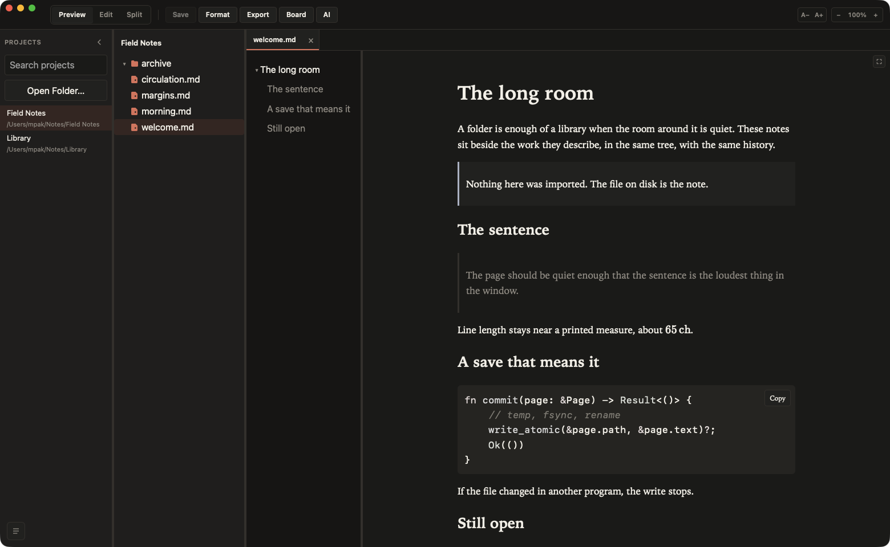

Free · Open source · macOS, Linux, and Windows
Your Markdown.
Your folders.
Read, edit, and protect the notes you choose with age encryption. Password-protected Markdown, right beside your ordinary files. No vault, no account, no cloud library.
New in 0.9.0: password-protected notes · macOS, Linux, and Windows

Any folder
Projects are paths on disk. Removing one from the list does not delete it.
Atomic saves
A file you did not edit comes back byte for byte. A file changed elsewhere is not overwritten.
age encryption
Protect individual notes with a password. Keep standard
.md.age files in the folders you already use.
Local agents
Codex, Claude, or OpenCode, if they are already on this machine. The app does not send your notes away.
- ⌘P Quick open
- ⌘⇧F Search files
- ⌘F Find
- ⌘E Preview or edit
- ⌘⇧E Split
- ⌘S Save
- ⌘⌥E Export PDF
01 · New in 0.9.0
Your notes, protected with age.
A journal, project notes, or a draft you want to keep private. Protect the saved contents with a password, then read and edit in the same workspace. Each note is a standard age file you own.
notes.md
→
notes.md.age
-
Create or convert
Choose Protect to start an encrypted note or encrypt existing Markdown. The complete filename gets an .age suffix. The protected copy opens in Preview; you choose Keep original or Delete original. Deleting first saves an encrypted recovery copy.
-
Unlock, edit, lock
Use Preview, Edit, Split, highlights, and task checkboxes after unlocking. Save encrypts your changes. Lock when you are done; unsaved edits get a Save / Discard / Cancel choice. Discarded edits are kept in an encrypted recovery copy.
-
Keep your options open
Change a password or deliberately export a decrypted Markdown copy. Standard binary age files work with the age and rage command-line tools in passphrase mode. Your notes stay portable.
Protected text stays out of content search, Mermaid caches, and session restore. The app does not save your password. Filenames remain visible, and unlocked text exists in memory. Keep your password safe: there is no password reset. Deleting an original is not secure erasure.
Windows: the encrypted-save and original-deletion fix has passed CI on main and awaits the next packaged release. See unreleased changes.
02
Write beside the page
Preview, Edit, and Split share one window. The source stays readable — headings, links, and fenced code — while the page beside it updates in place as you type. Unchanged diagrams stay put, and the edited text stays visible. Choosing a heading in the contents list scrolls the page and the source together and focuses the cursor at the start of its source line. Formatting lives in the toolbar, and in the shortcuts you already use.

03
The room, as it works now
More from the latest updates: highlights that travel with your notes, smoother Split editing, and careful saves. All alongside search, tasks, diagrams, and a contents panel you can put away.
-
Highlights that stay
Select a passage in Preview or Split. Pick a preset or custom color, then recolor or remove it later. Highlights live in the Markdown file and use normal Save and undo.
-
Reading
Tables, footnotes, alerts, wiki links, and YAML front matter. A task line is a checkbox in Preview. Click it and the file becomes
[x]or[ ]. -
Links
A link to another file opens a new tab, at the heading when the link has one. That document is still where you left it when you come back. A web address opens in the browser.
-
Contents
A button in the preview corner shows or hides the outline. Pressed in, the list is visible. The choice is saved. In Split, choosing a heading scrolls the page and the source. Full size fills the window under the title bar.
-
Saves that keep up
A red dot marks unsaved changes. Edits made during a save stay in your buffer, and each document has its own undo history. Atomic saves check for external changes before replacing a file.
-
Search and tabs
Quick open jumps to a name. Search in files takes plain text or a regular expression, and a plain query also finds a close path. Ordinary tabs return at the next launch with their view mode. Encrypted text is excluded from content search and session restore. A single click opens a temporary tab; double-click pins it.
-
The tree
New file, new folder, rename, duplicate, move, and trash. Drag into a folder, or hold Option to copy. Refresh reloads that folder. Reveal opens Finder, Explorer, or the file manager.
-
Pictures and source
PNG, JPEG, GIF, WebP, SVG, and the other common images open in Preview and stay images. Ruby, JavaScript, Elixir, and other source files open in the editor. Code blocks and quotes have Copy. Format aligns Markdown tables and pretty-prints JSON.
-
Diagrams and PDF
Click a Mermaid drawing to move, resize, and zoom it. The window remembers its size and place. KaTeX stays on the page. PDF export is on macOS; protected notes require a deliberate decrypted Markdown export first.
04
Twelve rooms for the same text
Paper, Solarized, Nord, Gruvbox, Catppuccin, Tokyo Night, and GitHub. Follow the system appearance, or flip light and dark for this session with ⌘⌥T — that choice is not written into your settings. Fonts, reading size, and preview colors live in Settings. A theme file you add is listed with these twelve.
- Paper Light
- Paper Dark
- Solarized Light
- Solarized Dark
- Gruvbox Light
- Gruvbox Dark
- Catppuccin Latte
- Catppuccin Mocha
- Nord
- Tokyo Night
- GitHub Light
- GitHub Dark

05
A workspace on your computer
-
No account
Reading, search, themes, and diagrams run on your computer. The only optional network request is Check for Updates.
-
No vault
Open a folder, or drop one on the window. The same files stay available to Git, your file manager, and any other editor.
-
Safer Markdown rendering
Version 0.9.0 includes the patched Markdown sanitizer, with regression checks for unsafe HTML and CSS while preserving supported highlights.
-
A board for this folder
Dashboard counts projects, Markdown files, and the agents you configured. Those numbers stay on this computer.
-
Agents on your terms
An external agent is a CLI you already installed: Codex, Claude, or OpenCode. It may use the network under its own terms. This app does not ship your Markdown to a model service.
Free, on macOS, Linux, and Windows.
Version 0.9.0 · Released
Choose your operating system to download the installer directly. No account required.
-
macOS
Apple Silicon & Intel
Download for macOS
macOS 12 or newerDMG · 19.7 MB
-
Linux
Debian & Ubuntu · x86_64
Download for Linux
WebKitGTK 4.1DEB · 9.0 MB
-
Windows
64-bit (x64)
Download for Windows
NSIS installer · WebView2EXE · 6.8 MB
The macOS app is signed and notarized. PDF export and installing updates from inside the app are available on macOS.